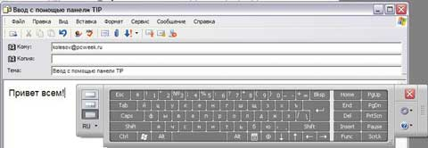
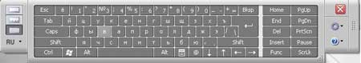
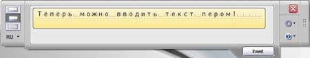
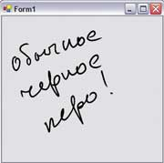
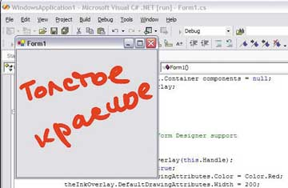
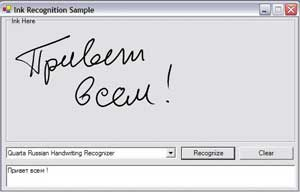

Андрей Колесов
Tablet PC - следующее поколение персональных компьютеров. Инновационный форм-фактор самого компьютера, перьевой ввод, встроенные средства распознавания рукописного текста и другие новшества (см. "Tablet PC осваивает русский", "BYTE/Россия" № 1'2005) - все это расширяет потенциальную сферу применения таких ПК. Но чтобы сказку превратить в быль, нужны качественно новые прикладные программные решения.
Новые возможности разработки ПО
Так что же и с помощью чего могут сделать программисты в среде Windows XP Tablet PC Edition? Прежде чем ответить на этот вопрос, нужно уточнить, чем же Tablet PC отличается от ставшего привычным для многих ноутбука.
По своему функционалу и составу планшетный ПК полностью покрывает возможности ноутбука. Для сегодняшнего дня оптимальным с точки зрения соотношения цена/потребительские качества вариантом считается размер диагонали 10-12 дюймов и масса компьютера 1,2-2 кг. Все это влечет за собой необходимость некоторого снижения мощности процессора, уменьшения объема ОЗУ и отсутствия компонентов "не первой очереди" (флоппи-дисководы, приводы компакт-дисков и т. п.). Но по возможностям внешнего взаимодействия планшетный ПК в целом не уступает хорошему ноутбуку: встроенная поддержка беспроводных соединений, инфракрасный порт, набор разъемов - USB, внешний дисплей, телефон, Ethernet, дисплей, наушники, микрофон.
Правда, сегодня "средний" Tablet PC по составу и мощности несколько уступает "среднему" ноутбуку, но это в основном определяется вопросами цены. Другими словами, при одинаковой мощности планшетный ПК будет дороже такого же "блокнота".
Tablet PC и ноутбуки используют одну и ту же ОС. Windows XP Tablet PC Edition - это Windows XP Professional Edition, дополненная средствами работы с перьевым вводом, в том числе программами распознавания рукописного текста. Таким образом, любое приложение для ноутбука будет работать на планшетном ПК.
Качественное преимущество Tablet PC - наличие экрана-дигитайзера, с которым можно работать с помощью пера. С точки зрения пользователя перо - это более удобный аналог мыши (согласитесь, сделать мышью автограф так, чтобы его смогли принять за подлинник в банке, крайне сложно!). К тому же, как выясняется, существует очень много сфер применения ПК (и деловых, и домашних), когда клавиатура не очень-то и нужна. Например, если вы используете компьютер в качестве мультимедийного центра или занимаетесь анализом данных.
С точки зрения программиста перо (точнее, дигитайзер), помимо удобства применения, имеет еще ряд важных новшеств по сравнению с мышью. Во-первых, разрешение у дигитайзера выше, чем у экрана. Во-вторых, он обеспечивает более высокую скорость отслеживания перемещения графического курсора. В-третьих, позволяет различать несколько градаций "нажима" пера на планшет. Все эти возможности лежат в основе решения качественно новых задач, реализуемых в рамках технологий чернильно-перьевого (P&I, pen-and-ink) ввода, в частности, распознавания рукописного текста (эти средства, кстати, входят в состав базового комплекта Windows XP Tablet PC Edition).
Что можно делать с помощью Tablet PCПервая реакция людей, которые впервые знакомятся с Tablet PC, как правило, однозначна - классно, интересно! Но после недолгих упражнений с перьевым вводом и распознаванием рукописного ввода возникают столь же типичные вопросы: а как все это применить для практической работы? Проблема, в общем-то, очень типичная для новинок вычислительной техники - как известно, пользователь может оценить аппаратные возможности только через те или иные программные приложения. И, конечно, наибольший эффект достигается лишь тогда, когда такие программы изначально пишутся в расчете на новые функции компьютера. Проблема продвижения планшетных компьютеров на массовый рынок сегодня именно в этом - в отсутствии достаточно широкого спектра ПО, эффективно использующего новый функционал и форм-фактор данных устройств. Осознавая это, Microsoft активно поддерживает независимых разработчиков в создании приложений для Tablet PC, одновременно расширяя ассортимент доступных на рынке прикладных программ. В начале апреля корпорация представила бесплатный пакет Experience Pack for Windows XP Tablet PC Edition 2005, включающий сразу шесть новых приложений, реализованных специально для планшетных ПК (http://www.microsoft.com/windowsxp/downloads/tabletpc/experiencepack). Ink Desktop. С помощью этой программы можно делать прямо на рабочем столе компьютера разнообразные рукописные заметки - телефонные номера, адреса или информацию о важных делах на день. Получается своеобразная кипа записок, которая не потеряется и в которой будет легко разобраться и найти нужную информацию. В конце концов, если у вас не очень рабочее настроение, то можно просто почеркать какие-нибудь каракули. Snipping Tool. Данный инструмент позволяет выбрать и вырезать любой фрагмент экрана - например, часть Web-страницы или офисного документа. В отличие от привычных средств, в Snipping Tool фрагмент может быть не только прямоугольным, но и любой формы, очерченной пером, как показано на рисунке. На изображении можно сразу сделать рукописные комментарии и потом отправить его, например, по электронной почте. При работе с Web-ресурсами адрес URL вставляется автоматически.
Ink Art. Это средство предназначено для создания изобразительных произведений. В его состав входит большой набор соответствующих инструментов: текстурные полотна, кисти, мелки, цветные карандаши и т. д. Художники - профессионалы и любители - по достоинству оценят возможность рисования или раскрашивания с помощью пера прямо на экране. Есть еще важное отличие от мыши - Ink Art использует способность планшета отслеживать силу нажима на перо, т. е. позволяет эмулировать реальные действия человека при работе с традиционными носителями. Ink Crossword. Любители кроссвордов смогут поиграть в эту игру в перерывах между делами. В поставку входит дюжина головоломок; кроме того, можно скачивать новые кроссворды: по одному каждый день бесплатно или гораздо большее количество за деньги. Energy Blue Theme Pack. Данный пакет включает оболочку Windows Media Player. Ее можно настраивать для конкретного планшетного компьютера, используя разные кнопки и другие элементы управления, с которыми удобно работать с помощью пера. Media Transfer. Строго говоря, это приложение практически вообще не использует специфические возможности Tablet PC. Это отдельный новый продукт Microsoft, предназначенный для работы с домашними мультимедийными центрами. Если у вас есть библиотека разнообразной мультимедийной информации (видео, музыка, фотографии и т. п.), то Media Transfer обеспечивает все необходимые функции синхронизации и передачи данных между хост-компьютером и различными терминалами, в том числе и Tablet PC. Взаимодействие происходит как по обычной сети, так и по беспроводным каналам связи. Набор Experience Pack можно загрузить бесплатно, но для этого пользователь должен стать участником программы Windows Genuine Advantage: упрощенно говоря, он должен иметь на своем ПК только лицензионное ПО Microsoft и позволить выполнить с сайта корпорации соответствующую проверку подлинности установленной ОС и других приложений. |
Первые шаги
Если загрузить программу, написанную для обычного настольного ПК, на планшетный компьютер, она будет автоматически поддерживать перо в качестве указателя курсора (параллельно с мышью), а если у нее есть поля текстового ввода, то им столь же автоматически будут доступны средства планшетной панели ввода (Tablet Input Panel, TIP). А это, в частности, означает, что любое клиентское Windows- или Web-приложение сможет работать без клавиатуры, только с использованием планшета.
Другой вопрос - насколько удобно будет работать с TIP. Создание больших документов в Word с ее помощью - довольно утомительное (но вполне реальное!) занятие, а вот для работы с электронной почтой возможностей панели будет вполне достаточно (рис. 1). В любом случае TIP - это существенно более эффективный инструмент ввода, чем клавиатура мобильного телефона, тем более что она реализует три режима: имитации клавиатуры, рукопечатного (печатными буквами) и слитного рукописного ввода с автоматическим распознаванием (рис. 2).
|  |
| Рис. 1. Планшетная панель ввода автоматически доступна любому приложению в среде Windows XP Tablet PC Edition.
|
|  |
|  |
| Рис. 2. Режимы ввода планшетной панели: вверху - режим имитации клавиатуры; внизу - рукопечатного ввода.
|
Вызов TIP выполняется двумя способами: статическим (панель выводится в нижнюю часть экрана компьютера с помощью пиктограммы на панели задач Windows или аналогичной кнопки на планшете и находится там постоянно до тех пор, пока пользователь явным образом не закроет ее) или динамическим - как только вы подводите перо к полю текстового ввода приложения, рядом с ним появляется кнопка TIP Access. Если указать на нее пером, то выводится TIP, которая автоматически исчезает, если ею не пользоваться несколько секунд или если покинуть текстовое поле.
Разумеется, если использовать какой-либо русификатор для распознавания рукописного текста, то эта функция автоматически становится доступной и приложению (на рисунках приведен вариант решения Russian Enhancement Pack for Tablet PC компании "Кварта Технологии", http://www.quarta.ru).
Создание Tablet-приложений
Но чтобы действительно использовать все новые возможности планшетных ПК, эти функции необходимо задействовать на уровне программного кода - с помощью специального бесплатного набора Windows XP Tablet PC Edition Development Kit 1.7.
Разработку P&I-программ удобнее всего вести в среде Visual Studio .NET. Подключив к проекту библиотеку Microsoft Tablet PC API DLL, программист получает в свое распоряжение все необходимые объекты. Ниже приведен небольшой пример создания приложения с использованием C# (жирным шрифтом выделен код, который мы пишем сами, остальные строчки формируются автоматически при создании проекта).
Чтобы обеспечить поддержку интеллектуальных подсказок редактора кода, в самом начале нужно сделать ссылку на пространство имен Microsoft.Ink:
using Microsoft.Ink;
Теперь напишем такой код для формы:
public class Form1 : System.Windows.Forms.Form
{
private System.ComponentModel.Container components = null;
private InkOverlay theInkOverlay;
public Form1()
{
// инициализация поддержки Windows Form Designer
InitializeComponent();
// работа с пером
theInkOverlay = new InkOverlay(this.Handle);
theInkOverlay.Enabled = true;
}
}
|
Приложение готово! Запустим его. Оно умеет делать пока не слишком много, но все же с помощью трех строк кода мы получили возможность писать пером на форме (рис. 3, а).
|  |  |
| Рис. 3. Первое Tablet-приложение: а) три строки кода - и приложение готово;
|
б) еще два оператора - и мы научились управлять толщиной и цветом линий.
|
Добавим к нашему проекту еще два оператора:
theInkOverlay.DefaultDrawingAttributes.Color = Color.Red;
theInkOverlay.DefaultDrawingAttributes.Width = 200;
Теперь (рис. 3, б) мы можем писать красным цветом с шириной линии 2 мм (одна логическая единица ширины равна 0,01 мм).
Набор Tablet PC SDK включает все необходимое для поддержки режима pen-and-ink:
- две библиотеки API, из которых первая, базовая, реализована в рамках архитектуры COM Automation, а вторая представляет собой .NET-слой поверх COM API;
- набор элементов управления, содержащих всю основную функциональность платформы Tablet PC (InkEdit, PIP, InkPicture);
- набор компонентов - строительных блоков для расширения базовой платформы;
- документацию и примеры применения.
Дополнительные средства третьих фирм
Набор разработчика от Microsoft предоставляет достаточно широкие возможности для создания планшетно-ориентированных приложений. Но для реализации "изощренных" профессиональных решений существенную помощь смогут оказать дополнительные средства третьих фирм. Хорошим примером тут послужит продукт InfiNotes (компания Agilix Labs, http://www.agilix.com). Он представлен в двух вариантах - Standard (бесплатный) и Professional (995 долл.). Но в любом случае модуль поддержки выполнения может распространяться бесплатно. Продукт можно загрузить с сайта http://www.infinotes.com, при этом возможности Professional будут также доступны в течение 30 дней.
InfiNotes включает два элемента управления - NoteBox (Standard) и ScribbleBox (Professional), каждый из которых представляет собой иерархическую объектную структуру (рис. 4). NoteBox позволяет размещать на форме несколько панелей управления, поддерживает управление размером окна для рисования, изменение масштаба изображения, функции "undo-redo" и многое другое. ScribbleBox развивает все эти возможности, реализуя, в частности, многостраничную поддержку. Фактически это аналог приложения Microsoft OneNote (см. "OneNote: управление персональной информацией", "BYTE/Россия" № 2'2005) - уступая этому офисному продукту с точки зрения пользователя, он предлагает более удобную объектную модель для разработчика.
 |
Рис. 4. InfiNotes расширяет стандартные возможности Tablet PC SDK: сравните работу этих трех элементов управления - InkPicture (SDK), NoteBox и ScribbleBox (InfiNotes).
|
Берите в руки SDK...
Для иллюстрации возможностей распознавания рукописного ввода продемонстрируем еще одно приложение, которое преобразует написанный пером текст в алфавитно-цифровой вид (рис. 5). В листинге приведен фрагмент кода, выполняющий непосредственные операции при нажатии кнопок "Распознать" и "Очистить".
|  | Рис. 5. Простое приложение с функцией распознавания рукописного ввода.
|
В составе Tablet PC SDK есть много подобных примеров, с помощью которых освоить программирование для планшетных ПК смогут и новички, у которых появляются хорошие шансы опередить даже профессионалов. Ведь в деле покорения целины порой важны не столько квалификация и опыт, сколько оперативность, воображение и настойчивость.
Так что берите Tablet PC, установите на него Visual Studio 2003 и Windows XP Tablet PC Edition Development Kit 1.7 и, как поется в старом австрийском гимне, - "путь открыт к успехам!".
Фрагмент кода приложения для распознавания рукописного ввода
//-----------------------------------------------------
// Это - фрагмент из Microsoft Tablet PC Platform SDK
//
// File: InkRecognition.cs
// Simple Ink Recognition Sample Application
//
// Эта программа демонстрирует,
// как можно построить простейшее
// приложение с использованием
// функций распознавания
// рукописного ввода
//
// Используемые функции: InkCollector, Ink, Strokes,
// RecognizerContext, RecognizerResult
//
//-----------------------------------------------------
using System;
using System.Drawing;
using System.Windows.Forms;
using System.Globalization;
// Подключение Tablet PC Platform API
using Microsoft.Ink;
namespace InkRecognition
{
public class InkRecognition :
System.Windows.Forms.Form
{
private InkCollector myInkCollector;
// инициализация распознавателя
Recognizers myRecognizers;
/// Тут пропущен большой фрагмент кода
/// инициализации распознавателя
///
private void btnRecognize_Click
(object sender, System.EventArgs e)
/// Обработка события - нажатие кнопки Recognize
{
if(myRecognizers.Count == 0)
{
MessageBox.Show("Распознаватель не определен");
return;
Recognizer selectedRecognizer =
myRecognizers[cbRecognizers.SelectedIndex];
RecognizerContext myRecoContext =
selectedRecognizer.CreateRecognizerContext();
RecognitionStatus status;
RecognitionResult recoResult;
RecoContext.Strokes =
myInkCollector.Ink.Strokes;
recoResult =
myRecoContext.Recognize(out status);
txtResults.SelectedText =
recoResult.TopString;
}
private void btnClear_Click
(object sender, System.EventArgs e)
/// Обработка события - нажатие кнопки Очистить
{
if (!myInkCollector.CollectingInk)
{
myInkCollector.Ink.DeleteStrokes();
gbInkArea.Refresh();
}
}
}
>}
|